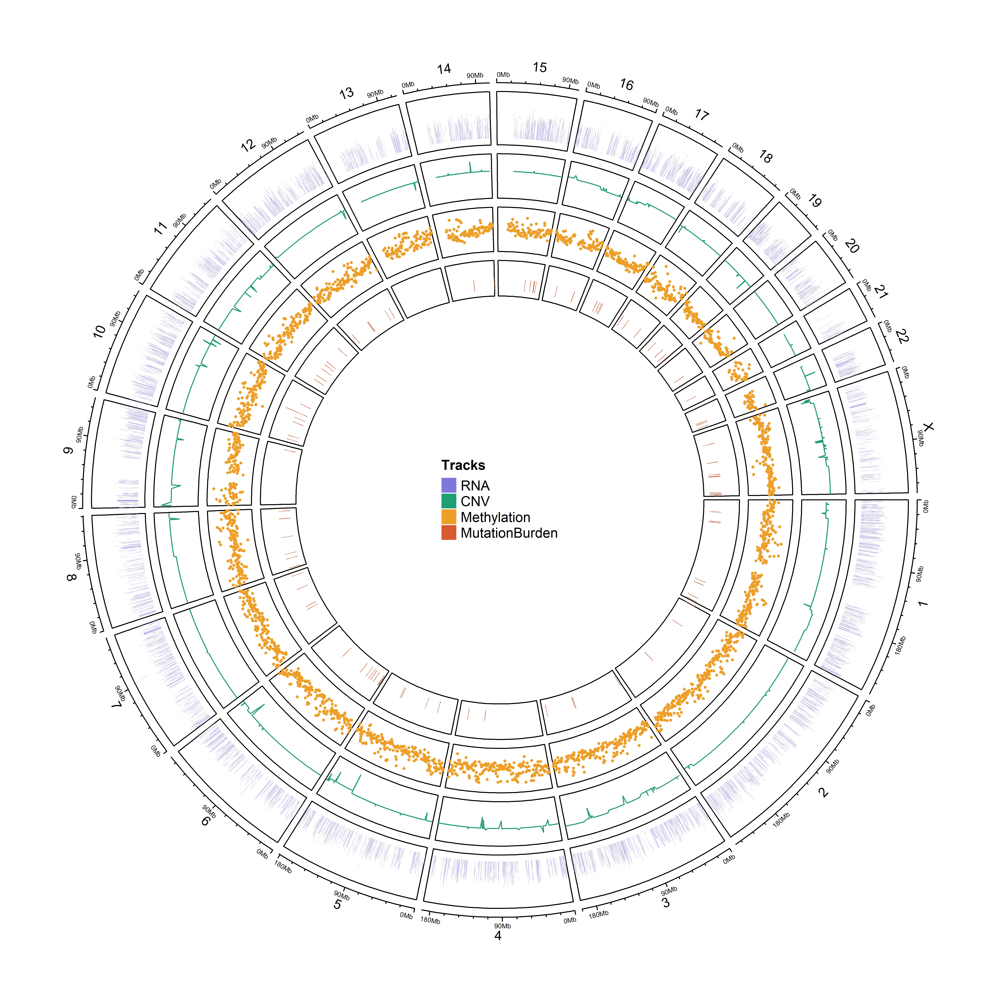

TCGA-BRCA Omics-Layer Visualization
Omics_layers_BRCA.RmdOverview
This vignette demonstrates how to visualize multi-omics data integrated into genomic coordinates using OmicsKit. This workflow focuses on:
- Mapping and plotting omics features along linear chromosomes using
nice_GenomeTrack(). - Generating whole-genome circular representations via
nice_circos().
1. Data Loading
We begin by loading the package and the multi-layer tracking dataset pre-computed for the TCGA-BRCA cohort.
2. Linear Genomic Tracks (nice_GenomeTrack)
The nice_GenomeTrack() function allows you to plot
specific molecular features or statistical metrics, such as log2 fold
changes or mutation frequencies, across individual chromosomes or
specific genomic regions.
This provides a clear one-dimensional overview of how molecular changes are spatially distributed across the genome.
plot_or_message(
nice_GenomeTrack(
tracks = brca_omics_layer_tracks$genome_tracks
)
)3. Circular Genome Visualization (nice_circos)
For a global, multi-layered perspective of the entire genome, a
circular layout, commonly known as a Circos plot, is widely used in
bioinformatics. The nice_circos() function integrates
multiple tracks, such as copy number variation, expression levels, and
clinical groups, into a single unified plot.
Since rendering interactive or highly detailed Circos plots during
package compilation can be resource-intensive, the code block below is
set to eval = FALSE. A pre-rendered high-resolution static
image can be saved in the package figures directory for rapid
documentation rendering.
# Example code to generate the full circular layout
nice_circos(
tracks = brca_omics_layer_tracks$circos_tracks,
genome = "hg38",
sample_id = brca_omics_layer_tracks$sample_id
)
Whole-genome circular multi-omics layout for TCGA-BRCA.
Session Info
sessionInfo()
#> R version 4.4.2 (2024-10-31 ucrt)
#> Platform: x86_64-w64-mingw32/x64
#> Running under: Windows 11 x64 (build 26200)
#>
#> Matrix products: default
#>
#>
#> locale:
#> [1] LC_COLLATE=English_United States.utf8
#> [2] LC_CTYPE=English_United States.utf8
#> [3] LC_MONETARY=English_United States.utf8
#> [4] LC_NUMERIC=C
#> [5] LC_TIME=English_United States.utf8
#>
#> time zone: America/Bogota
#> tzcode source: internal
#>
#> attached base packages:
#> [1] stats graphics grDevices utils datasets methods base
#>
#> other attached packages:
#> [1] OmicsKit_1.0.0.0000
#>
#> loaded via a namespace (and not attached):
#> [1] RColorBrewer_1.1-3 rstudioapi_0.18.0
#> [3] jsonlite_2.0.0 magrittr_2.0.5
#> [5] GenomicFeatures_1.58.0 farver_2.1.2
#> [7] rmarkdown_2.31 fs_2.1.0
#> [9] BiocIO_1.16.0 zlibbioc_1.52.0
#> [11] ragg_1.5.2 vctrs_0.7.3
#> [13] memoise_2.0.1 Rsamtools_2.22.0
#> [15] RCurl_1.98-1.18 base64enc_0.1-6
#> [17] htmltools_0.5.9 S4Arrays_1.6.0
#> [19] progress_1.2.3 curl_7.1.0
#> [21] broom_1.0.13 SparseArray_1.6.2
#> [23] Formula_1.2-5 pROC_1.19.0.1
#> [25] sass_0.4.10 bslib_0.10.0
#> [27] htmlwidgets_1.6.4 desc_1.4.3
#> [29] Gviz_1.50.0 httr2_1.2.2
#> [31] cachem_1.1.0 GenomicAlignments_1.42.0
#> [33] lifecycle_1.0.5 pkgconfig_2.0.3
#> [35] Matrix_1.7-1 R6_2.6.1
#> [37] fastmap_1.2.0 GenomeInfoDbData_1.2.13
#> [39] MatrixGenerics_1.18.1 digest_0.6.39
#> [41] colorspace_2.1-2 patchwork_1.3.2
#> [43] AnnotationDbi_1.68.0 S4Vectors_0.44.0
#> [45] textshaping_1.0.5 Hmisc_5.2-5
#> [47] GenomicRanges_1.58.0 RSQLite_2.4.6
#> [49] filelock_1.0.3 httr_1.4.8
#> [51] abind_1.4-8 compiler_4.4.2
#> [53] bit64_4.8.0 htmlTable_2.5.0
#> [55] S7_0.2.2 backports_1.5.1
#> [57] BiocParallel_1.40.2 DBI_1.3.0
#> [59] biomaRt_2.62.1 rappdirs_0.3.4
#> [61] DelayedArray_0.32.0 rjson_0.2.23
#> [63] tools_4.4.2 foreign_0.8-87
#> [65] otel_0.2.0 nnet_7.3-19
#> [67] glue_1.8.1 restfulr_0.0.16
#> [69] grid_4.4.2 checkmate_2.3.4
#> [71] cluster_2.1.8.2 generics_0.1.4
#> [73] gtable_0.3.6 BSgenome_1.74.0
#> [75] ensembldb_2.30.0 tidyr_1.3.2
#> [77] data.table_1.18.4 hms_1.1.4
#> [79] xml2_1.5.2 XVector_0.46.0
#> [81] BiocGenerics_0.52.0 pillar_1.11.1
#> [83] stringr_1.6.0 splines_4.4.2
#> [85] dplyr_1.2.1 BiocFileCache_2.14.0
#> [87] lattice_0.22-6 deldir_2.0-4
#> [89] survival_3.8-6 rtracklayer_1.66.0
#> [91] bit_4.6.0 biovizBase_1.54.0
#> [93] tidyselect_1.2.1 Biostrings_2.74.1
#> [95] knitr_1.51 gridExtra_2.3
#> [97] ProtGenerics_1.38.0 IRanges_2.40.1
#> [99] SummarizedExperiment_1.36.0 stats4_4.4.2
#> [101] xfun_0.54 Biobase_2.66.0
#> [103] matrixStats_1.5.0 stringi_1.8.7
#> [105] UCSC.utils_1.2.0 lazyeval_0.2.3
#> [107] yaml_2.3.12 evaluate_1.0.5
#> [109] codetools_0.2-20 interp_1.1-6
#> [111] tibble_3.3.1 cli_3.6.6
#> [113] rpart_4.1.23 systemfonts_1.3.2
#> [115] jquerylib_0.1.4 dichromat_2.0-0.1
#> [117] Rcpp_1.1.1-1.1 GenomeInfoDb_1.42.3
#> [119] dbplyr_2.5.2 png_0.1-9
#> [121] XML_3.99-0.23 parallel_4.4.2
#> [123] pkgdown_2.2.0 ggplot2_4.0.3
#> [125] blob_1.3.0 prettyunits_1.2.0
#> [127] jpeg_0.1-11 latticeExtra_0.6-31
#> [129] AnnotationFilter_1.30.0 bitops_1.0-9
#> [131] VariantAnnotation_1.52.0 scales_1.4.0
#> [133] purrr_1.2.2 crayon_1.5.3
#> [135] rlang_1.2.0 KEGGREST_1.46.0